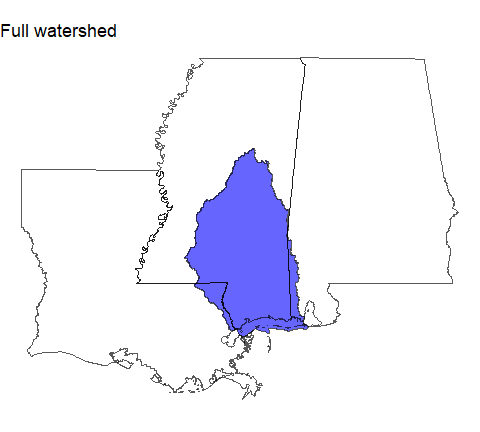
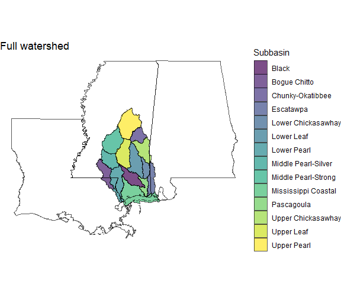
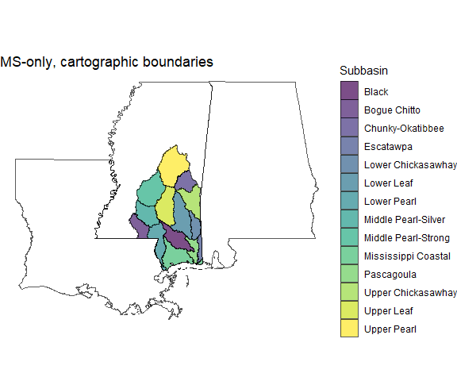

The msepBoundaries package is a collection of several spatial data frames delineating Mississippi Sound Estuary Program (MSEP) boundaries in different ways. Watershed boundaries use the National Hydrography Dataset and state and cartographic boundaries are based on the tigris package’s boundaries from the US Census Bureau.
Installation
You can install the development version of msepBoundaries from GitHub with:
# install.packages("pak")
pak::pak("CMEP-MS/msepBoundaries")Contents
msepBoundaries currently contains 11 spatial data frames. They are various combinations of:
- Outline, as the combination of HUC4 units 0317 and 0318 (“outline”) vs. Subbasins, which are the HUC8s contained in those HUC4s (“subbasins”).
- Entire region (“full”) vs. the region excluding the Mississippi Sound itself (“land”).
- Entire watershed vs. only within the state of Mississippi (“ms”).
- Additional divisions: HUC4, HUC10, and HUC12.
So outline_full contains everything. outline_land contains everything except the Mississippi Sound. outline_ms_full contains everything within the state of MS. outline_ms_land is that, but without the Mississippi Sound itself. Data frames starting with subbasins follow the same pattern, but are split into HUC8s.
See the article Boundary Versions for even more detail than that provided below.
What it looks like
Here are a couple of examples. First load the libraries and use tigris to get state outlines:
library(msepBoundaries)
library(dplyr)
library(tigris)
options(tigris_use_cache = TRUE)
library(ggplot2)
# get the outlines of MS, AL, and LA
lamsal <- states(cb = TRUE) |>
filter(NAME %in% c("Mississippi", "Alabama", "Louisiana"))Full Outline
The outline of the entire watershed.
ggplot() +
geom_sf(data = outline_full,
fill = "blue",
alpha = 0.6) +
geom_sf(data = lamsal,
fill = NA) +
theme_void() +
ggtitle("Full watershed")
Subbasins
Subbasins (HUC8) for the entire watershed.
ggplot() +
geom_sf(data = subbasins_full,
aes(fill = name),
alpha = 0.7) +
geom_sf(data = lamsal,
fill = NA) +
scale_fill_viridis_d() +
theme_void() +
labs(title = "Full watershed",
fill = "Subbasin")
Land-only subbasins, and only Mississippi
In case we want to ignore the large area of water that is the Mississippi Sound, and restrict the area to the state of Mississippi.
ggplot() +
geom_sf(data = subbasins_ms_land,
aes(fill = name),
alpha = 0.7) +
geom_sf(data = lamsal,
fill = NA) +
theme_void() +
scale_fill_viridis_d() +
labs(title = "MS-only, cartographic boundaries",
fill = "Subbasin")